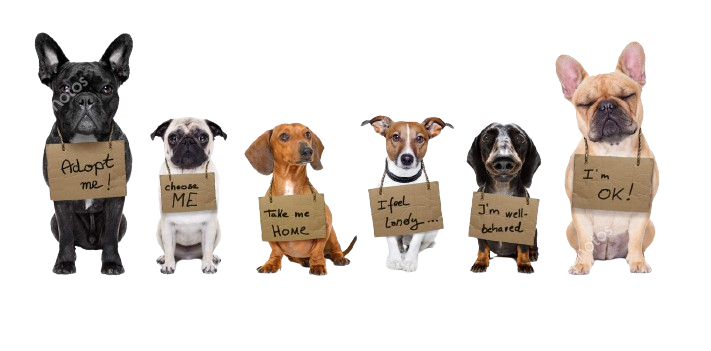

Certainly! A dog adoption shelter is a facility dedicated to finding homes for dogs in need. These shelters play a crucial role in rescuing, caring for, and rehoming dogs that may have been abandoned, surrendered, or found as strays. Here's some brief information about dog adoption shelters:
- Mission: The primary mission of a dog adoption shelter is to provide a safe and temporary refuge for dogs, addressing their basic needs such as food, shelter, and medical care.
- Rescue and Rehabilitation: Shelters often rescue dogs from various situations, including abuse, neglect, or abandonment. They work towards rehabilitating these dogs both physically and behaviorally to prepare them for adoption.
- Adoption Process: Shelters typically have an adoption process that involves screening potential adopters to ensure they can provide a suitable and loving home for the dog. This may include home visits, interviews, and reference checks.
- Healthcare: Shelters prioritize the health of their residents, providing veterinary care, vaccinations, spaying/neutering, and treatment for any medical issues. This ensures that dogs are in good health before being adopted.
- Education and Outreach: Many shelters engage in community outreach programs to educate the public about responsible pet ownership, the importance of spaying/neutering, and the benefits of adopting from shelters.
- Volunteers and Staff: Shelters rely on a combination of paid staff and volunteers who contribute their time and efforts to care for the dogs, assist with administrative tasks, and organize events to promote adoptions.
- Funding: Shelters often operate on limited budgets and rely on donations, grants, and fundraising events to cover the costs of daily operations, medical care, and facility maintenance.
- Collaboration with Rescues: Some shelters collaborate with rescue organizations to maximize their reach and increase the chances of finding suitable homes for dogs.
- No-Kill vs. Open-Admission Shelters: Shelters may be classified as either no-kill or open-admission. No-kill shelters aim to save every healthy and treatable animal, while open-admission shelters accept all animals, regardless of their health or behavior.